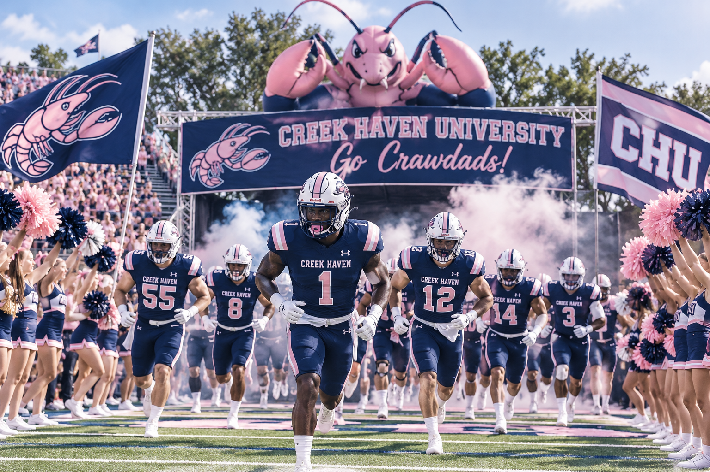
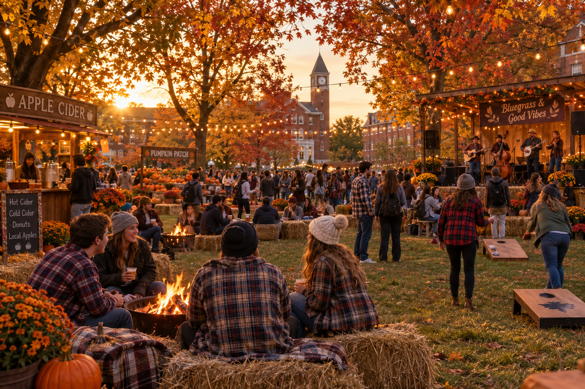

Homecoming Football Game

Cheer on your Creek Haven Crawdad's for homecoming weekend!!!!
View Event
Join students and teachers for the Annual Creek Haven University Fall Festival for a day filled with fun. Take a break from your studies to carve pumpkins, bob for apples, pet farm animals, paint pumpkins, find your way out of a mini corn maze, and so much more.
Not only can students and teachers attend, this event is open to the entire community. This event is also dog friendly so feel free to bring your furry friend for all of the fall festivities.
The Creek Haven University Fall Festival is open to all who would like to participate. The Quad will have accessible pathways and seating areas. If you would like to attend but have questions and/or conserns about if the Quad meets your accessibility needs, contact the school at creek_haven_univ@gmail.com.

Cheer on your Creek Haven Crawdad's for homecoming weekend!!!!
View Event
Cheer on your Creek Haven Crawdad Volleyball Team!!!!
View Event
Dance to your favorite songs with your friends at CHU's silent Disco!!
View Event